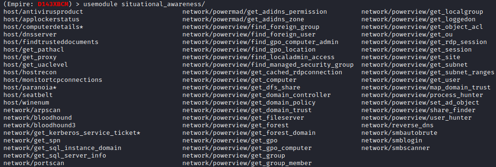

situational_awareness
Situational Awareness
modules include features for scanning the network for additional hosts, ports, shares...
(
Empire
)
> usemodule situational_awareness
/
[TAB][TAB]
#press two times TAB
